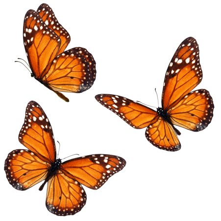
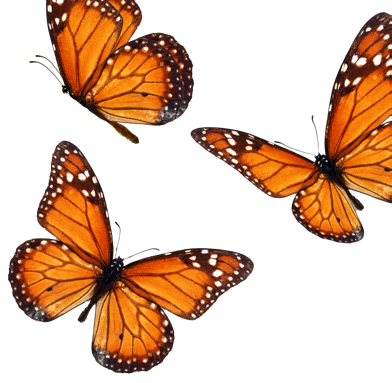
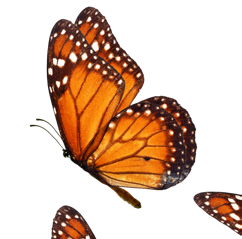

Prestad atención a los siguientes pasos, que os permitirán crear un animal fantástico de película.
Organizad todo el material y la información que habéis recopilado en la investigación.
Elegid el soporte en el que presentaréis creación: material físico o virtual.
Mediante el método del ensayo-error, dad forma al aspecto de vuestro animal fantástico.
Reservad un espacio para citar las fuentes de información que habéis empleado.
Organizad en el aula una presentación para mostrar cómo ha transcurrido el diseño de vuestro animal fantástico, de qué partes ha constado el proceso y qué conclusiones se pueden extraer del resultado.
¿QUÉ HEMOS APRENDIDO?
SÍNTESIS DE SABERES BÁSICOS:
Recoged en un mapa conceptual los saberes básicos que habéis adquirido, incluyendo las siguientes palabras clave: invertebrados, anélidos, artrópodos, vertebrado, anuro, ofidio y placentario.
AUTOEVALUACIÓN:
Resolved individualmente las siguientes preguntas:
¿En qué consistió el reto?
¿Qué pasos has seguido para lograrlo?
¿Qué he aprendido creando un animal fantástico?
¿Cómo podría mejorar la próxima vez que diseñe una criatura ficticia?
¿Cómo me siento con el resultado final?
COEVALUACIÓN:
Evaluad ahora el trabajo en equipo y vuestro grado de satisfacción con el proceso y el resultado obtenido, respondiendo a estas preguntas:
¿Hemos respetado los roles asignados a cada miembro del equipo: portavocía, secretaría, coordinación de proyecto…?
¿Hemos calculado y distribuido bien el tiempo para cada una de las tareas realizadas?
¿Todos los miembros del equipo hemos aportado algo en la creación del animal fantástico?

Mariposas monarca

Mariposas monarca en vuelo

Mariposa monarca en vuelo